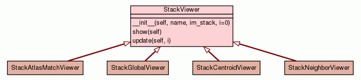

Home
Trees
Indices
Help
registration
Package registration
::
Module viewer
:: Class StackViewer
[
hide private
]
[
frames
] |
no frames
]
Class StackViewer
source code

Instance Methods
[
hide private
]
__init__
(
self
,
name
,
im_stack
,
i
=
0
)
source code
show
(
self
)
source code
update
(
self
,
i
)
source code
Home
Trees
Indices
Help
registration
Generated by Epydoc 3.0.1 on Tue Jun 4 01:59:55 2013
http://epydoc.sourceforge.net